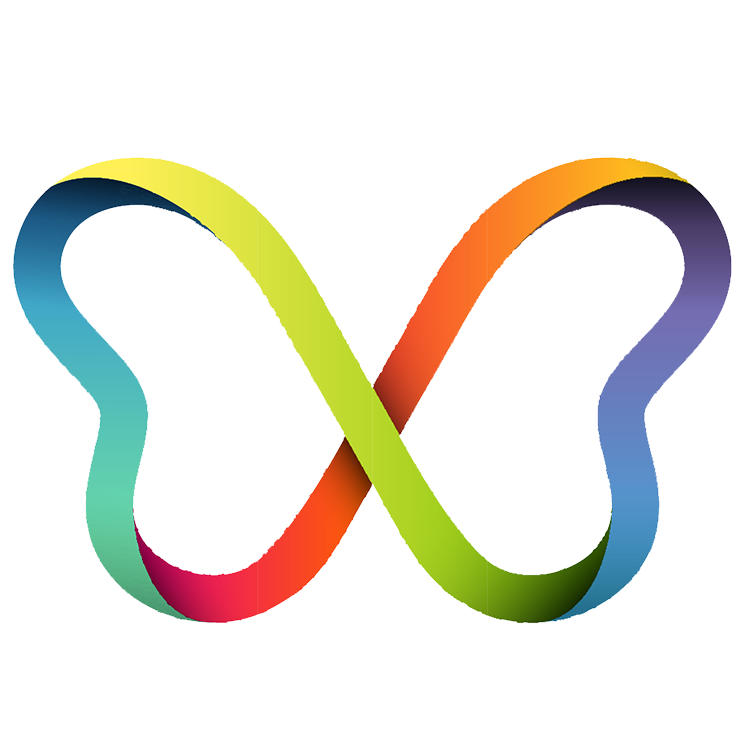
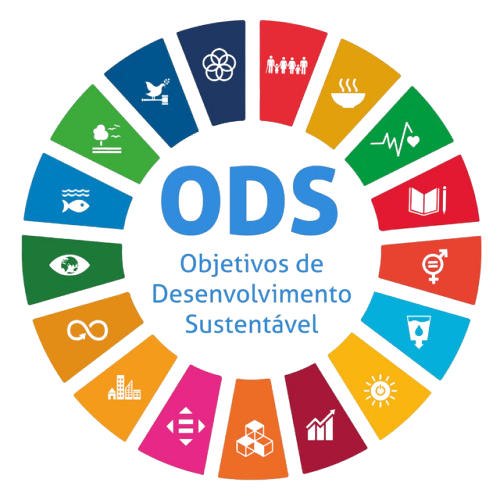
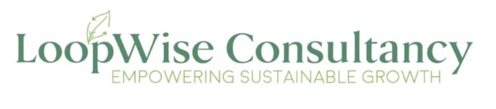
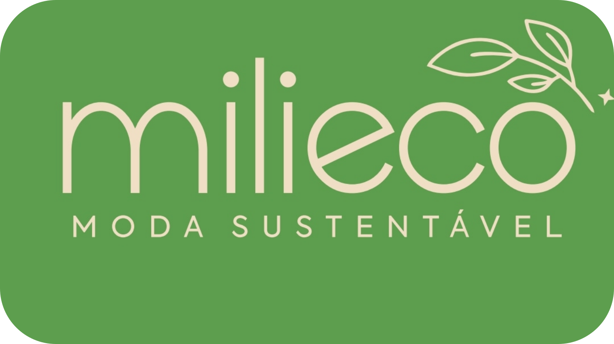
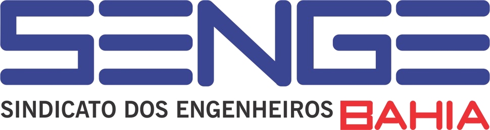
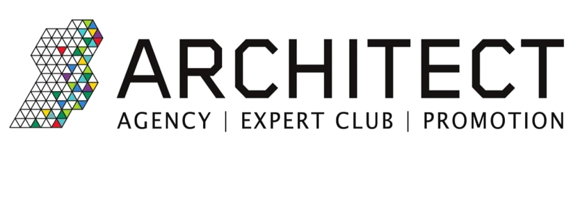
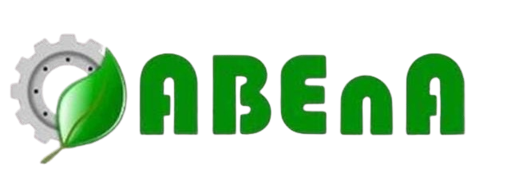

ECOSYSTEM 8 SKILLS
Ecossistema para o Desenvolvimento de Habilidades Humanas Sustentáveis e Tecnológicas.
Venha participar do Ecosystem8Skills, um ecossistema humano único. Participe dessa jornada do mindset linear ao circular e posteriormente do sistêmico ao ecossistêmico, uma oportunidade para atuar no desenvolvimento da consciência humana e da materialização da economia circular. Este método integra ainda o Congresso Internacional Circular Tech Skills(3ª Edição) e a plataforma EcosysTechSkill.
Venha fazer
parte! Inscreva-se no link abaixo e vamos juntos nessa
Jornada de Linear ao Circular!
Você pode vivenciar 6 , 10 ou 12
meses desse programa com avaliação do grau de
Circularidade, Palestras e Cursos.
O nosso programa tem como meta a adaptação e desenvolvimento; Circularidade; Modelos Sistemicos e Ecossistêmicos. E conta com um tripé: 1. Formação do Ecossistema Humano- Ecosystem8Skill-; 2- Uma integração tecnologica de sites e plataformas da EcoRecitec e Plataforma EcosysTechskill ( lançamento)visando dar suporte ao processo de conscientização e materialização da Circularidade; 3- Congresso Internacional Circular Tech Skills - Disseminar a inovação circular com impacto.

VAMOS FAZER JUNTOS ESSA JORNADA CIRCULAR
Economia e Ecossistema
Circular
Aplicados:
- Em resíduos
- Construção
- Psicologia
- Normatização
Mineração e reciclagem no contexto de economia circular
Habilidades Circulares, Sistêmicas e Ecossistêmicas
Tecnologias
- ESG Tech
- Greentech
- Circular Tech
- HR Tech
VENHA VOCÊ TAMBÉM PARA A JORNADA DO LINEAR AO CIRCULAR E DO CIRCULAR AO ECOSSISTÊMICO!!
Imagine um espaço inovador onde modelos Sistêmicos, Ecossistêmicos e Circulares se
conectam com o pensamento e a mentalidade circular,
criando novas formas de aprender, agir e transformar negócios. O Ecossistema das 8 Habilidades Circulares Essenciais para Transição do Linear para o Circular denominada de Ecosystem8Skills será o primeiro Ecossistema a integrar Circular Soft Skills, Circular Hardskills e Meta Skills em um fluxo continuo que você pode aplicar diretamente em sua empresa ou em qualquer negócio circular, sistêmico.
O processo acontecerá em etapas, criando às condições apropriadas para a mudança de paradigma do linear ao Circular.
Aqui, você vai vivenciar todas as etapas essenciais para a materialização da economia circular e ESG:
Diagnóstico sistêmico e ecossistêmico
Planejamento estratégico
Governança colaborativa
Aplicação prática e resultados tangíveis
Mais do que aprender, você será parte de uma jornada que conecta propósito, inovação e
impacto positivo. Venha conosco e descubra como atuar em um ecossistema de forma diferente,
fluida e transformadora.
Alguns Palestrantes e Parceiros do Congresso Internacional Circular Tech Skills e do Ecossistema Circular 8 Skills - Ecosystem8Skills
ARENA PRINCIPAL
PALESTRANTES
Direção Técnica e Palestrante Mindset e Habilidades Circulares na Construção de Ecossistemas para a Economia Circular.
CEO da EcoRecitec e CEC City Salvador
Relevância do Planejamento e Gestão para a Economia Circular para a Indústria
Gerente de Sustentabilidade da FIEB
Gerente na Finep
Palestrante sobre Financiamento a Economia Circular
Fundadora do Moscou Circular.
Desafios e Oportunidades no planejamento estratégico de cidades circulares: O caso de Kazan(Rússia)
Ceos da Decolores
Parceiros do Circular Tech Skills fases 1 e 2
Coordenador do CEC City Vitória e Diretor da Construtora OUT
Palestrante de construção circular
Palestrante Normas ISO 323 da Economia Circular
Coordenação da elaboração das Normas ISO pela ABNT
Carbongreen
Engenheiro Ambiental e sanitarista e consultor da Carbongreen

Gerente de Operações da Retec
Reinserção de resíduos industriais na cadeia produtiva
Abiplast
Rastreabilidade dos Resíduos Plásticos e os Benefícios para a Cadeia de Valor
Representante da Sindiplasba
Seleção & Separação, tudo começa por aqui
Universidade Lusíada de Lisboa - Portugal
FACTOR4Sustainability Founder
Palestrante Arquitetura Circular
Assessora do Comitê de Construção Circular Moscou-Russia
Coordenação Clube CEC Moscou
Secretário - SECIS - Prefeitura Municipal de Salvador
Palestrante - Cidades Resilientes e Circulares

Assessora de Efiencia Energetica do Grupo Neoenergia
Projeto Vale Luz
Gerente Executivo na Green Eletron
Palestrante sobre Logística Reversa dos Materiais Eletrônicos
Consultor de Economia Circular e Sustentabilidade Houston - EUA
Coordenador de Painel ESG - Instituições Públicas
Conselheiro da CEDAE
LatAm Innovation Community Manager
A Importância do Design Circular na Cadeia de Valor- Setor de Alimentos
Circular Tech Skills
Coordenadora do Comitê Empreendedorismo Social e Ambiental
Palestrante do tema ESGTech
Oficial de Políticas da UE e da Cooperação Internacional
Palestrante de Política de Economia Circular com Exemplos Práticos na Holanda
Suécia
Founder of Circularista AB and Waste2Value
Palestrante: Como a Inteligência Artificial pode contribuir para a Economia Circular
International Council for Circular Economy - Índia
Palestrante - Panorama da Economia Circular no Mundo Vista do Oriente
FOTOS DO EVENTO
DIREÇÃO DA JORNADA DO LINEAR AO CIRCULAR
Direção Técnica
-
CEO Eco-Recitec e Gerente CEC city Salvador
ASSESSORIA
Desenvolvimento e criação TI
Obs: Todos os apoios ou patrocínios para serem validados deverão ser encaminhados para as empresas EcoRecitec ou Decolores
E-mails: eco.recitec@gmail.com ou celene.recitec@donaverde.com.br
VENHA PARTICIPAR DA JORNADA QUE SERÁ ADAPTATIVA E EM DESENVOLVIMENTO
ECOSYSTEM 8 SKILLS:
ECONOMIA CIRCULAR, MODELOS SISTEMICOS E ECOSSISTÊMICOS, HABILIDADES E TECNOLOGIAS TRANSFORMADORAS
Após o sucesso do I Congresso Internacional Circular Tech Skills em duas etapas, fazendo parte dessa Jornada de Linear ao Circular, estamos abrindo inscrição para o Ecossistema Circular 8 Skills. Você passará a entender na prática como o modelo Sistemico- e Ecossistêmico poderá ser operado com geração de valor para todos os participantes. Estará fazendo parte do nosso Ecossistema: Indústrias, Empresas, Satartups, ONG's e Cooperativas, porque a Economia Circular, Sustentabilidade e Tecnologia não será realizada por um único segmento.
PARCEIROS & REALIZADORES
Organizações que tornaram este evento possível






